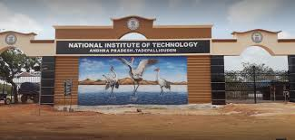

Check your profile details,academic details and more...
National Institute of Technology, Andhra Pradesh is the 31st institution among the chain of NITs started by the Government of India. NIT Andhra Pradesh is established in the state of Andhra Pradesh recently in the academic year 2015 – 2016.
A new campus has been established with 172.6 acres of land adjacent to Chennai-Kolkata Highway (NH-16) in the air-strip lands of Tadepalligudem. CPWD had taken up the construction activity for all the buildings using Prefabrication construction technology. The construction work of Phase IA buildings (Academic & laboratory complexes, Hostels, faculty and staff quarters etc.) is already completed. Presently the institute is fully running from the permanent campus. The construction works of Phase-IB is ongoing and expected to get ready by December, 2020, to create additional academic & Laboratory infrastructure along with fullfledged recreation & students amenities centre.
